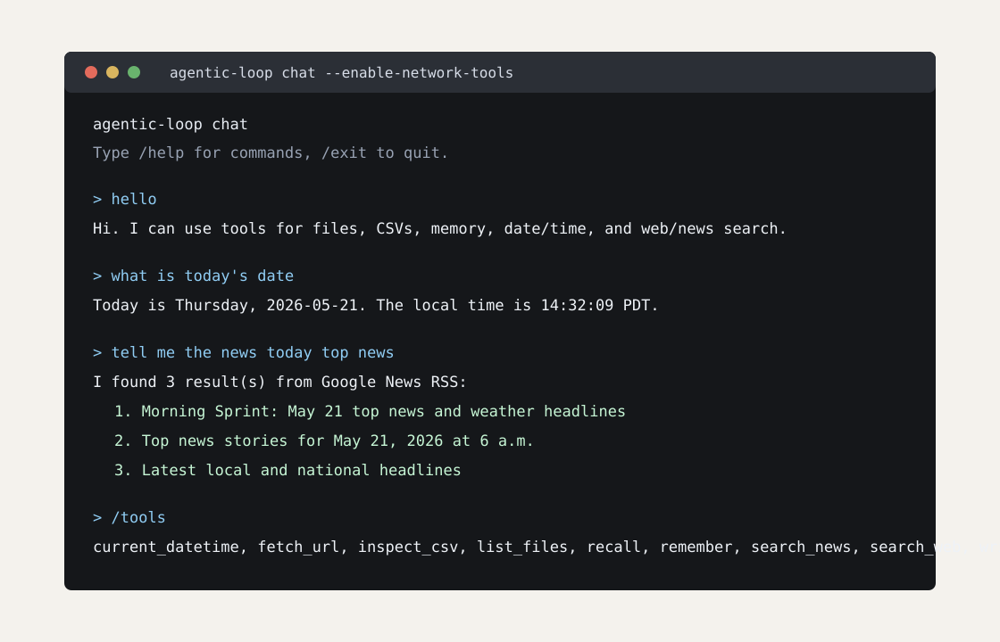
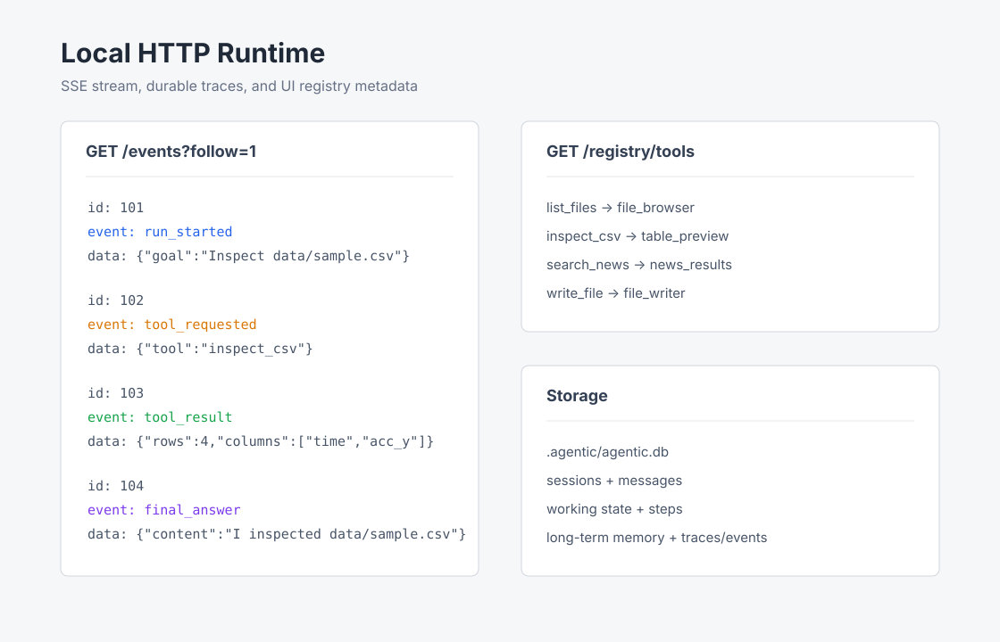

Terminal chat
Continuous local chat with file, memory, date/time, web, news, and fetch tools.
Local-first agent runtime
A small, inspectable agent loop with tools, workspace policy, durable SQLite state, streaming events, voice, and runtime-selectable model adapters.
Try it locally
curl -fsSL https://raw.githubusercontent.com/Bowen-AI/AgenticLocal/main/scripts/install.sh \
| bash -s -- --with-ollama
agentic-loop chat --enable-network-toolsWhat it looks like

Continuous local chat with file, memory, date/time, web, news, and fetch tools.

Run, model, tool, approval, memory, and final-answer events persisted to SQLite.
Architecture
The model chooses an action. The runtime checks policy, executes approved tools, records events, persists state, and feeds the observation back into the next step.
Use cases
Inspect files, read notes, and write safe outputs under configured roots.
Preview CSV columns, row counts, missing values, and numeric ranges.
Opt into web search, Google News RSS search, and URL fetching.
Use the browser voice page now; plug in realtime voice adapters later.
Docs